LOOK16: Settings section spacing (Phosphor dark)
Gap = distance between bordered panels, measured in the real app. Today measures 16px.
Settings > Console, 1300px
Today: 16px between panels (--ds-space-4, Stack normal)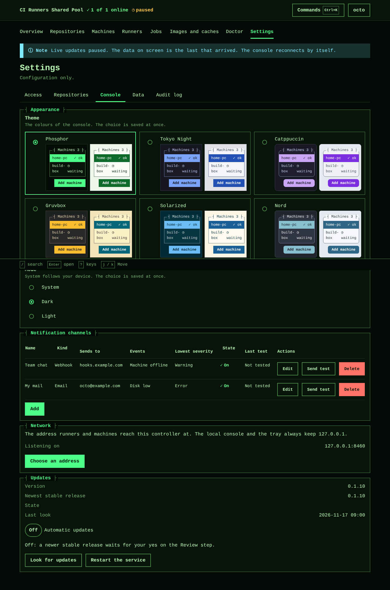
A: 32px (--ds-space-6)B: 40px (not a token; 48px is --ds-space-7)C: 32px gap + pane gap 16px + 8px extra under legend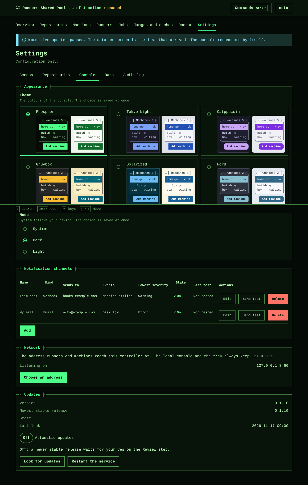
Settings > Console, 393px
Today: 16px between panels (--ds-space-4, Stack normal)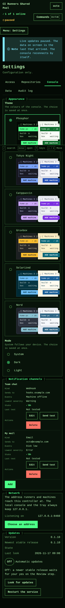
A: 32px (--ds-space-6)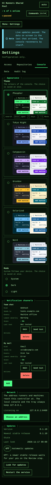
B: 40px (not a token; 48px is --ds-space-7)C: 32px gap + pane gap 16px + 8px extra under legend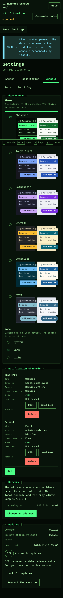
Settings > Access, 1300px
Today: 16px between panels (--ds-space-4, Stack normal)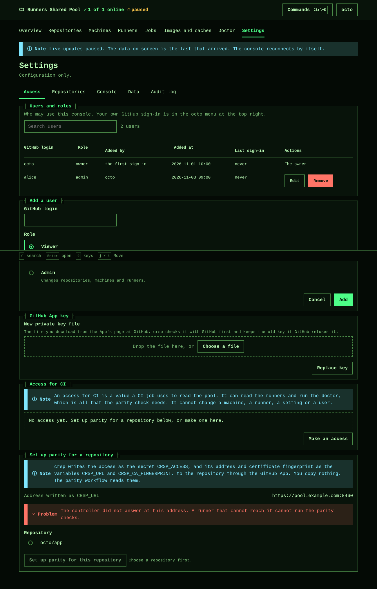
A: 32px (--ds-space-6)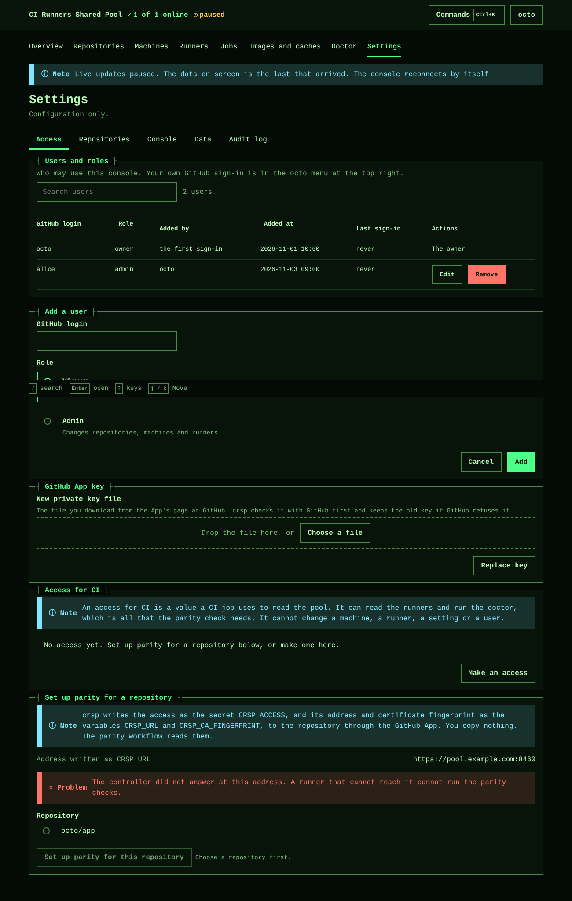
B: 40px (not a token; 48px is --ds-space-7)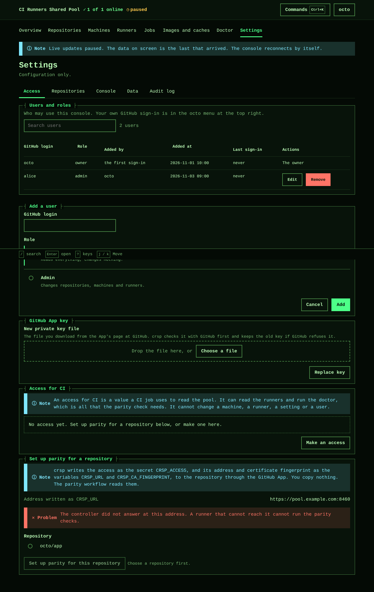
C: 32px gap + pane gap 16px + 8px extra under legend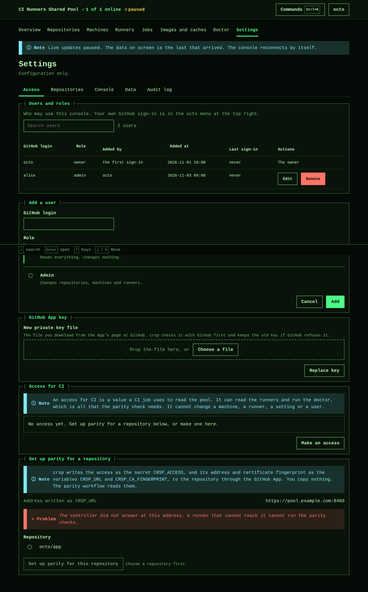
Settings > Access, 393px
Today: 16px between panels (--ds-space-4, Stack normal)A: 32px (--ds-space-6)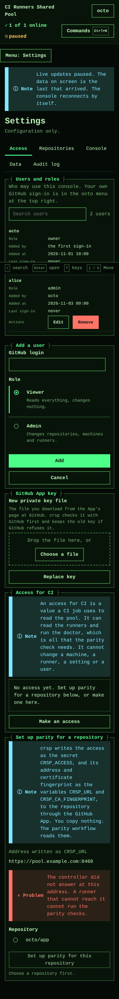
B: 40px (not a token; 48px is --ds-space-7)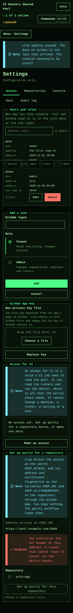
C: 32px gap + pane gap 16px + 8px extra under legend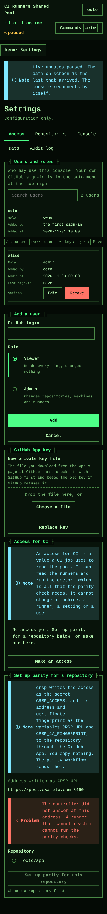